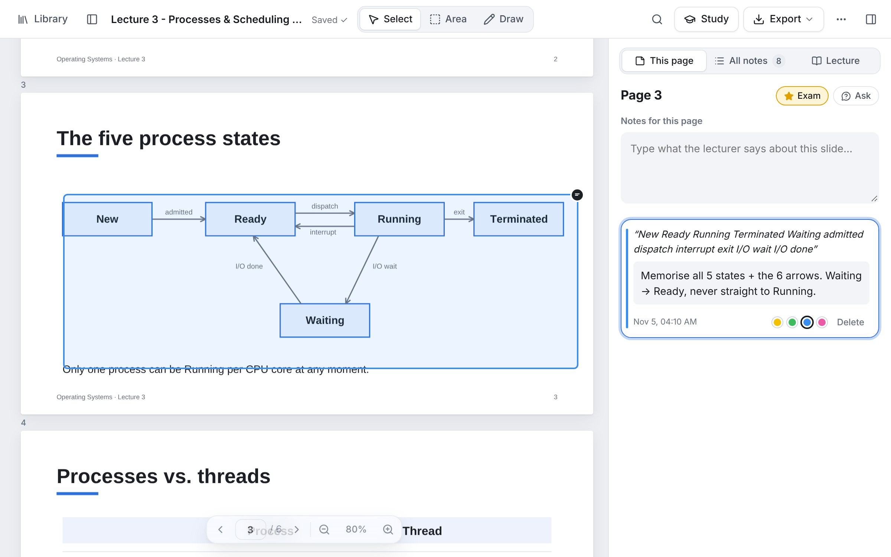
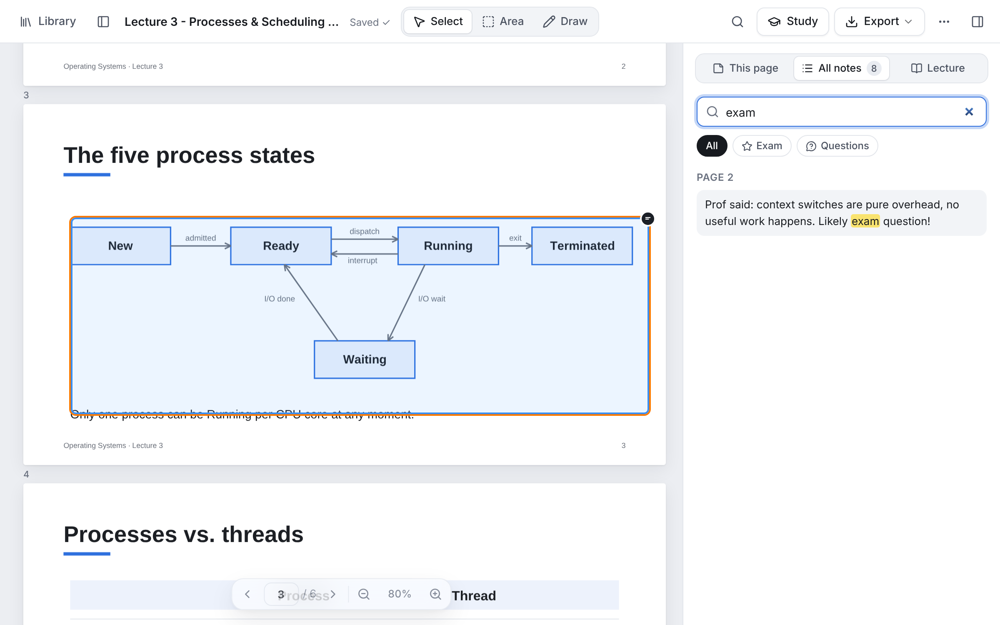
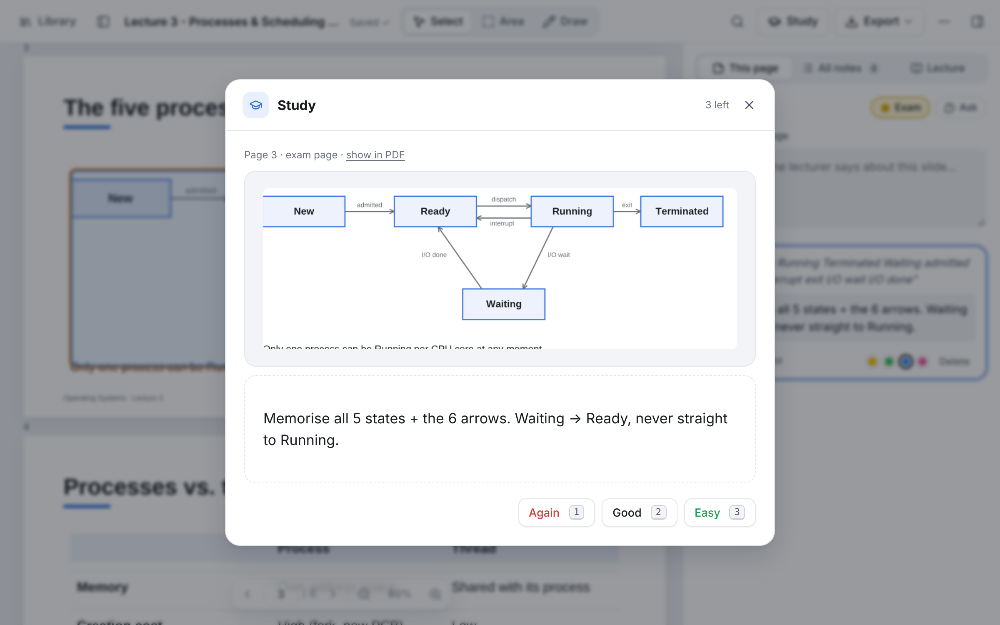
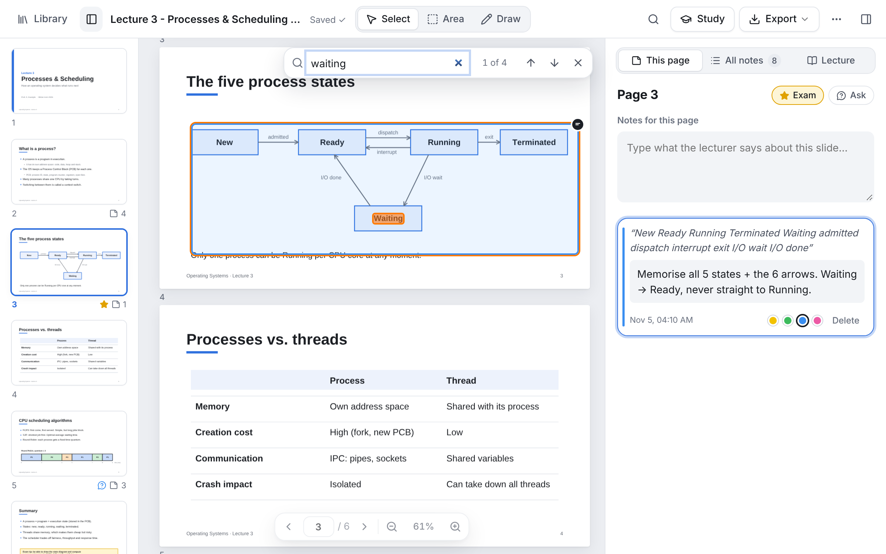
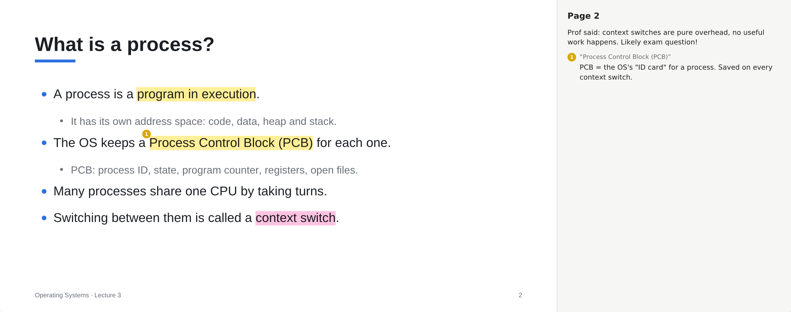
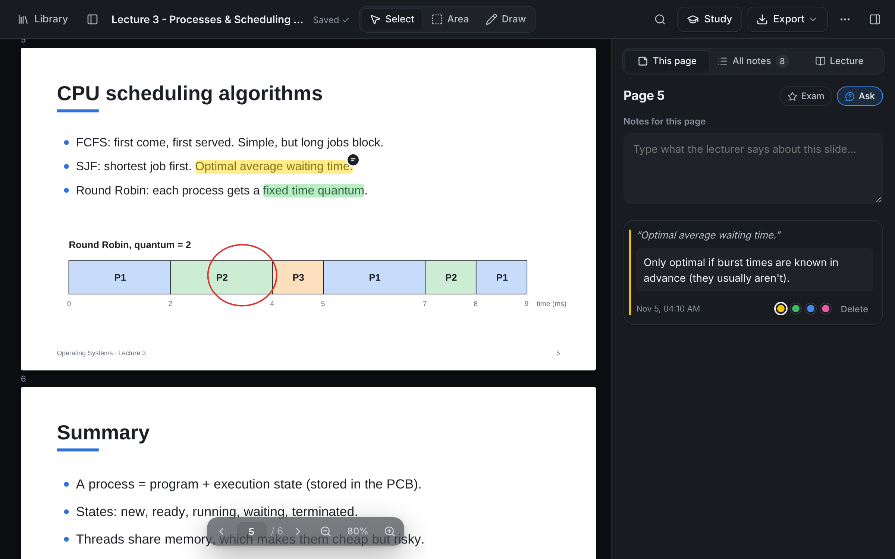

Free · Open source · No account
Your lecture notes, right on the slides.
uni-pdf is a PDF reader built for lectures. Highlight what matters, attach a note to any sentence or diagram, and walk out with one PDF that has your notes printed next to every slide.
Runs in your browser. Works offline. Your files never leave your device.
From slides to study notes in three steps
-
1
Open your slides
Drag the lecture PDF into the window. Your library remembers every deck and where you stopped.
-
2
Highlight and annotate
Select text and pick a colour, or press N to attach a note. Box a diagram or formula with A. Each slide also has its own notes field.
-
3
Export and study
Get a PDF with numbered highlights and your notes in a column beside each slide. You can also export Markdown for your notes app.
Built for how lectures actually work
Notebook apps make you copy slides around. A plain PDF viewer gives you nowhere to write. uni-pdf puts the notes panel next to the slide you're on.
Notes that stick to the exact sentence
Notes are anchored to the text you selected. Hover a highlight to read its note, or click it to edit. The panel always shows the notes for the slide you're looking at, so you're never hunting through a separate document.
- Four highlight colours
- A notes field for each slide, plus general lecture notes
- Undo if you delete something by accident

Diagrams, formulas and images too
Not everything on a slide is selectable text. Press A and drag a box around a chart, an equation or a screenshot to pin a note to it. Any words inside the box are saved with it, so they're searchable later.

Find anything before the exam
The All notes tab lists every highlight and note in the lecture, grouped by slide. Search them all at once and click a result to jump straight to that spot.

Turn your notes into flashcards
Every highlight with a note is a flashcard. Press S to study: see the slide text or diagram, try to remember your note, then reveal it and grade yourself. Spaced repetition brings each card back just before you'd forget it.
- Diagram cards show the exact part of the slide you boxed
- Study only ⭐ exam pages the night before
- Export to Anki with one click

Search the slides, not just your notes
Press Ctrl+F to find a term on every slide of the lecture and step through the matches. Open the thumbnails (T) to see the whole deck, which slides have notes, and the ones you've marked ⭐ exam-relevant or ❓ to ask about in the tutorial.

✏️ Draw on slides
Circle things, add arrows, or sketch the diagram the lecturer draws on the board, using a mouse, a touchscreen or a stylus. Drawings are kept in the PDF export as sharp lines.
⌨️ Keyboard-first
Arrows to turn pages, H to highlight, N for a note, ? for every shortcut. You can keep up with a fast lecturer without reaching for the mouse.
📚 Search every lecture
The library searches the notes of all your lectures at once and opens the right slide.
📲 Install it like an app
Install it from Chrome or Edge to get its own window, have it work offline, and open PDFs straight from your file manager.
🔁 Notes follow the file
Your notes are tied to the file's contents, not its name. Download the slides again or move them, and your notes are still there. Exports handle maths symbols like λ, ∑ and ≤ correctly.
💾 One-file backup
Back up every PDF and note in a single file, and restore it on a new laptop in seconds. Dark mode and phone support are included too.
Walk out of the lecture with one tidy PDF
Export puts every slide next to a notes column. Highlights are numbered and matched to your notes. The slide text stays sharp, selectable and searchable.

PDF with notes
For printing, revising, or sending to a friend who missed the lecture.
Editable PDF
Looks the same in any reader, but has your notes inside it. Open it in uni-pdf on any computer and keep editing.
Markdown
Paste your notes into Obsidian, Notion, or any notes app.
Backup (.json)
Save a copy of your notes before you clear your browser data.
Private by design. Not by promise.
uni-pdf has no server, so there's nowhere to send your files. The app is a set of static files that runs entirely in your browser. Your PDFs and notes are stored on your own device (in IndexedDB) and are never uploaded.
- No account, no sign-up, no email
- No analytics, no cookies, no ads
- Works with the Wi-Fi off, so it's fine for exams and flights
- Open source. Read the code or host it yourself.

Questions
Is it really free?
Yes. uni-pdf is open source and released into the public domain. There's no paid tier and nothing is locked.
Do I need to install anything?
No. Click Open the app and it runs in your browser. If you want, you can install it from Chrome or Edge (the install icon in the address bar) to get its own window. You can also download the offline version and open index.html straight from a USB stick.
Where are my notes stored? Can I lose them?
They're stored in your browser's storage on this device. They stay there until you clear your browser's site data or delete the PDF from the library. To be safe, use Export → Backup now and then, or Export → Editable PDF, which keeps your notes inside the file.
Can I use it on two computers?
There's no cloud sync, because nothing leaves your device. To move a lecture, export it as an Editable PDF and open that file in uni-pdf on the other computer. All your notes come back editable. Putting the file in a synced folder such as OneDrive or Dropbox makes this easy.
Which browsers work?
Current Chrome, Edge, Firefox and Safari, on Windows, macOS, Linux, ChromeOS, Android and iPad. Chrome and Edge give the best experience, including installing it as an app.
Does it work with scanned slides?
You can open them and use area notes and slide notes. To highlight text, the PDF needs real text in it, which most lecture slides exported from PowerPoint, Keynote, Google Slides or LaTeX have.
Does it change my original PDF?
No. The original stays untouched. Exports are always new files.
I found a bug / I have an idea.
Please open an issue on GitHub. Feature ideas from students are very welcome.